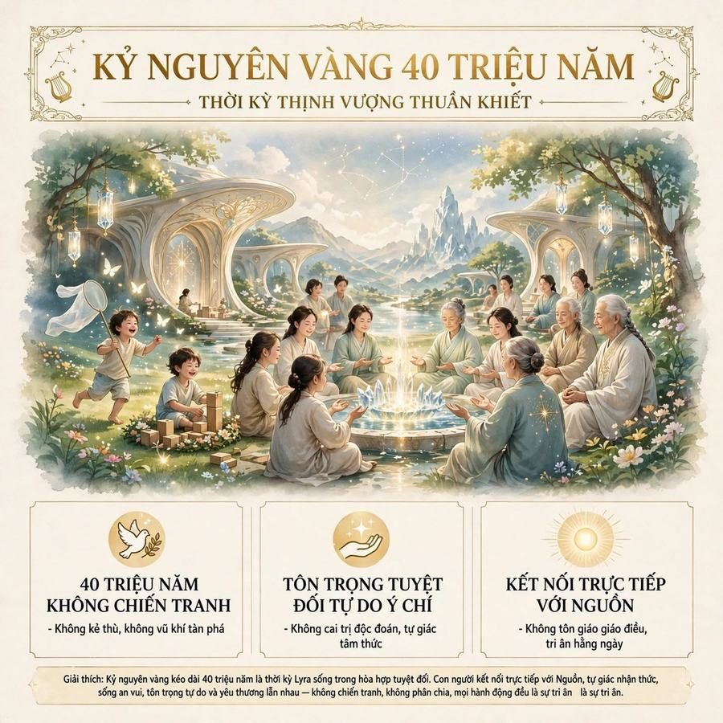
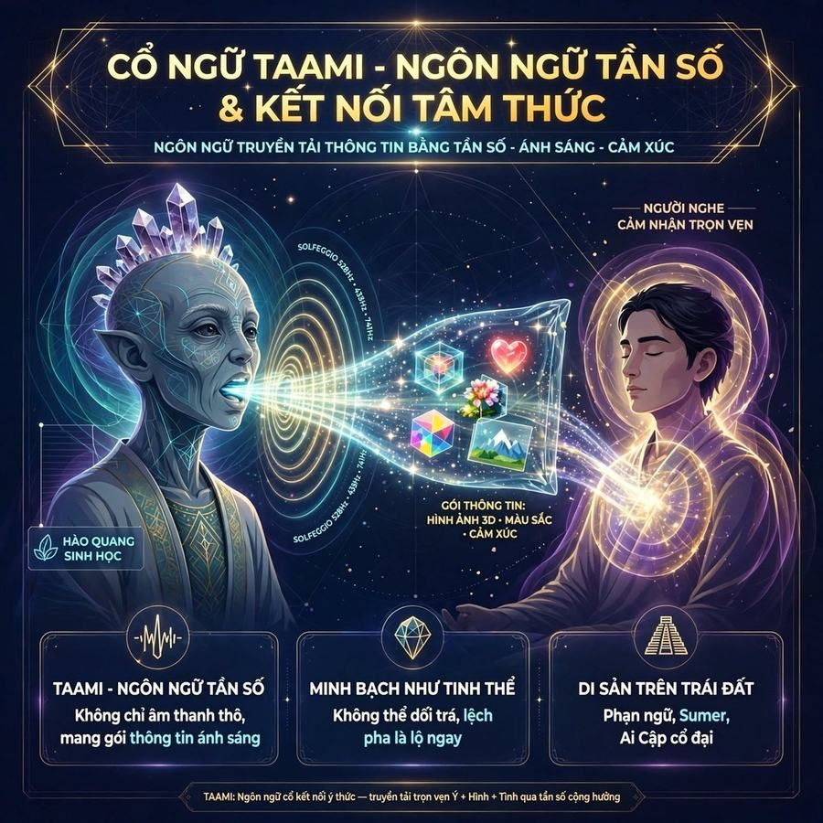
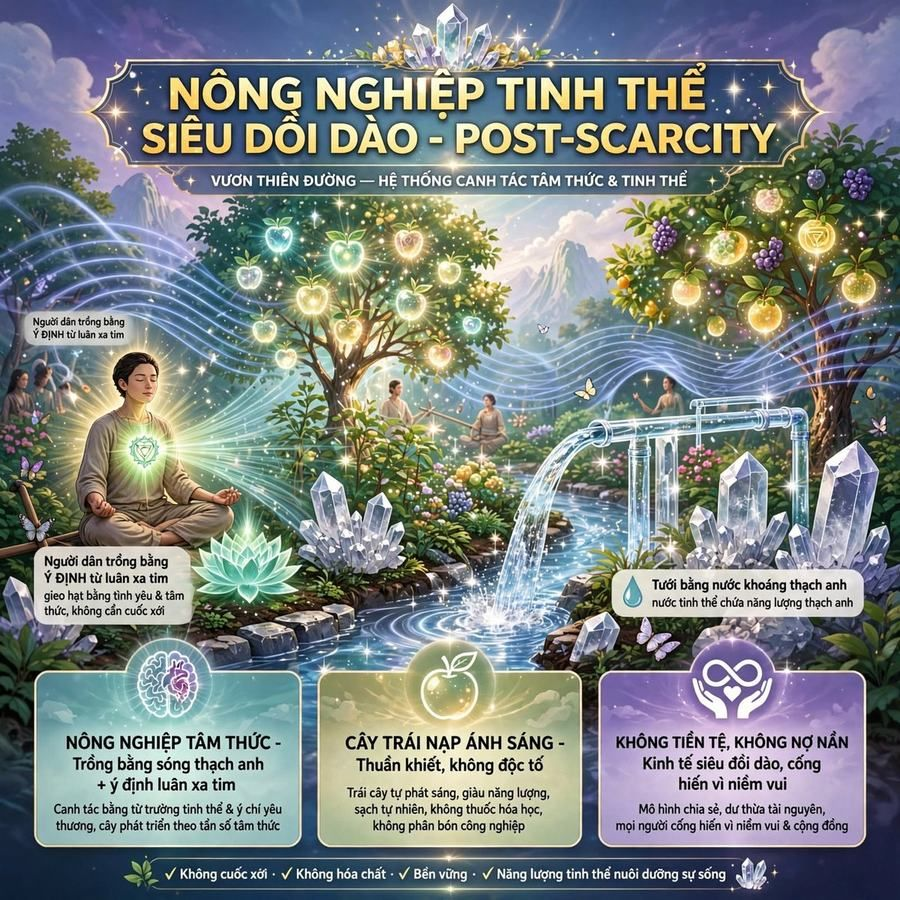
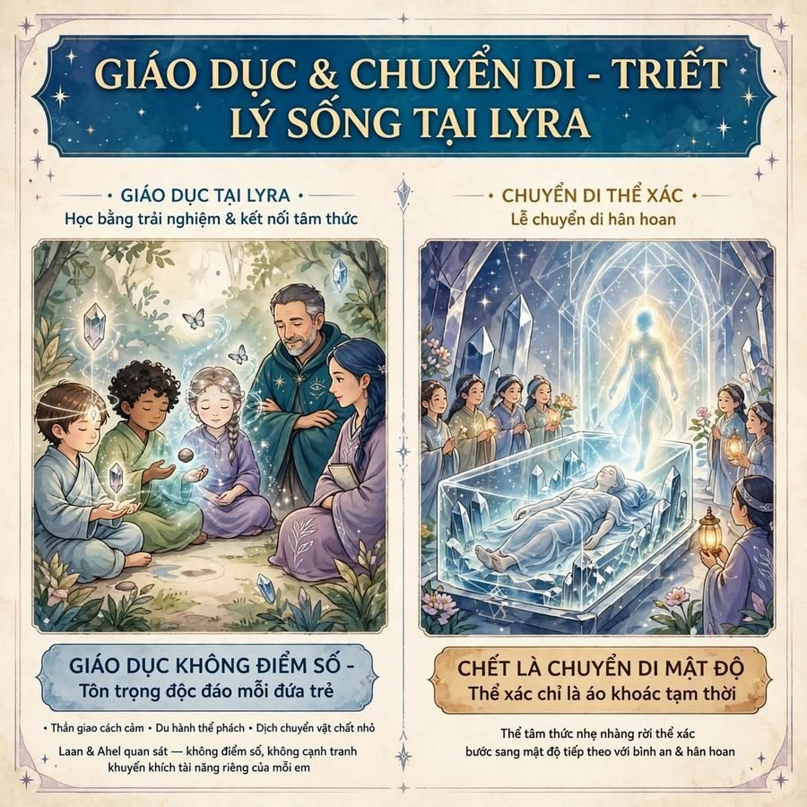
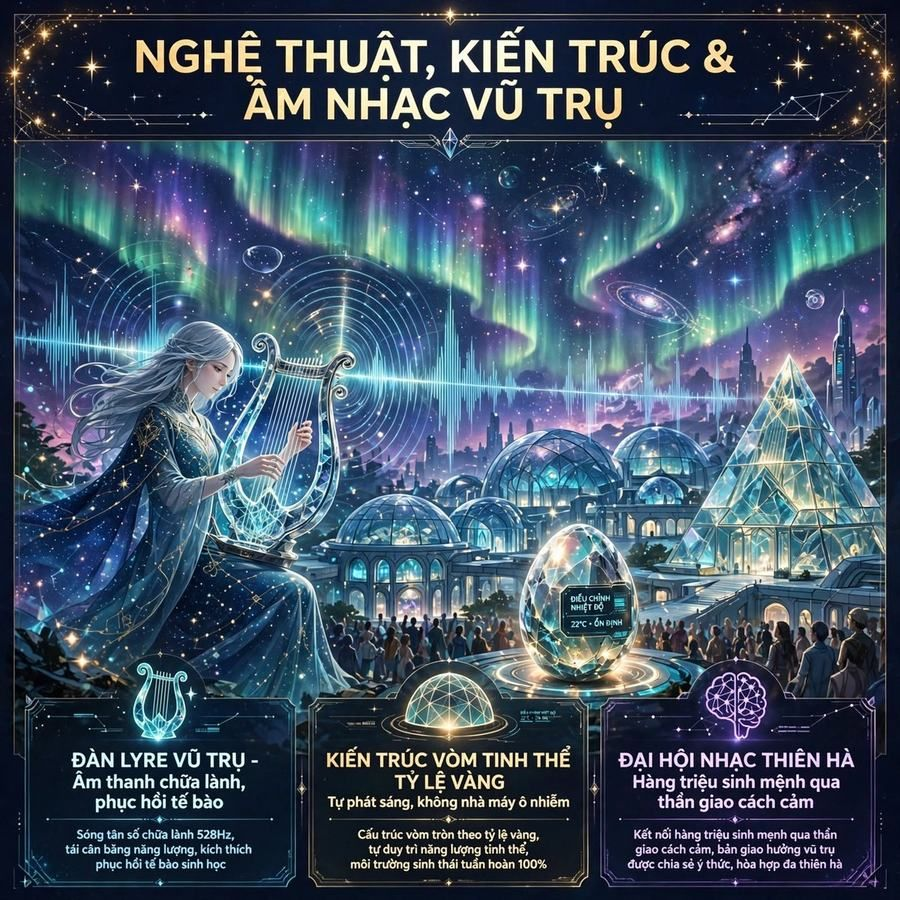
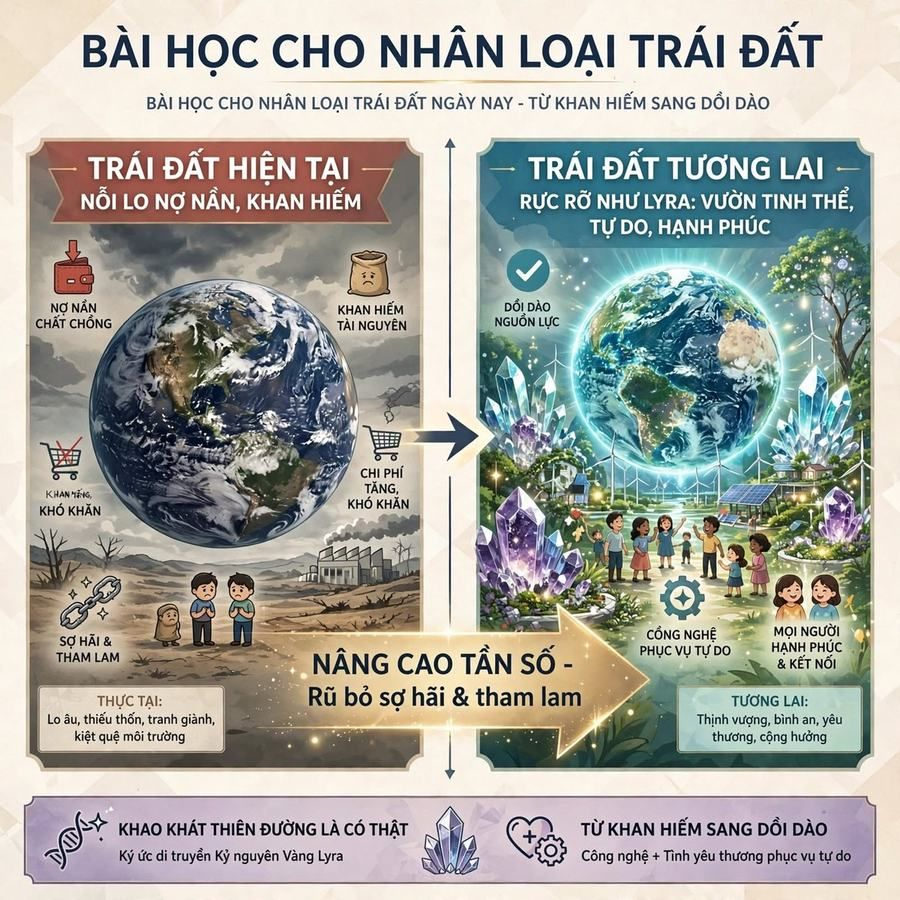

Trang chủ / Chuyên đề 1: Tiền Sử Thiên Hà / Kỳ 5
Chuyên đề 1 · Kỳ 5 / 90
VĂN HÓA, NGÔN NGỮ TAAMI & KỶ NGUYÊN VÀNG NÔNG NGHIỆP 40 TRIỆU NĂM

Ở các kỳ trước, chúng ta đã cùng nhau khám phá khoảnh khắc khởi nguyên khi dòng ý thức Toàn Thể đi qua Lăng Kính Của Lyra, bản thiết kế di truyền 12 chuỗi DNA của Liên minh Paa-Taal, môi trường thiên đường tại Hệ Sao Man (Kepler-62), cũng như sự phân hóa rực rỡ của 5 dòng tộc sinh mệnh đầu tiên (Ahel, Noor, Taal, Laan, Ladrakh).
Nhưng bức tranh về nôi tổ tiên Lyra sẽ không thể trọn vẹn nếu chúng ta không bước sâu vào khám phá đời sống tinh thần, triết lý sống và văn hóa ứng xử của nền văn minh khởi nguyên này.
Làm thế nào mà 5 chủng tộc với hình thái sinh học khác nhau lại có thể sống chung trong sự hòa hợp tuyệt đối suốt 40 triệu năm mà không hề xảy ra một cuộc chiến tranh hay xung đột bè phái nào? Cổ ngữ Taami — ngôn ngữ ngoại giao gốc của thiên hà — vận hành ra sao để xóa bỏ hoàn toàn sự dối trá? Và mô hình Nông nghiệp Tinh thể Siêu dồi dào đã giải phóng con người khỏi gánh nặng mưu sinh như thế nào?
Hãy cùng dấn thân vào Kỳ 5: Văn Hóa, Ngôn Ngữ Taami & Kỷ Nguyên Vàng Nông Nghiệp 40 Triệu Năm để sống lại khoảnh khắc thiên đường rực rỡ nhất trong lịch sử loài người!
✦ ✦ ✦1. BỐI CẢNH KỶ NGUYÊN VÀNG 40 TRIỆU NĂM — THỜI KỲ THỊNH VƯỢNG THUẦN KHẢO
Trong suốt chiều dài lịch sử Đa Vũ trụ, hiếm có một giai đoạn nào mang lại sự bình yên, tự do và phát triển tâm linh thuần khiết như Kỷ nguyên Vàng tại hệ sao Man.
A. 40 Triệu Năm Không Chiến Tranh Và Vũ Khí Tàn Phá
- Sự Vắng Bóng Hoàn Toàn Của Khái Niệm "Kẻ Thù": Trong suốt 40 triệu năm sinh sống tại hệ sao Man, cư dân Lyra hoàn toàn không có khái niệm về "chiến tranh", "vũ khí tàn phá" hay "sự xâm lược". Họ sống trong một dải tần số nhận thức cao, nơi sự hòa hợp và tôn trọng lẫn nhau được coi là quy luật tự nhiên bất biến của tồn tại.
- Tôn Trọng Tuyệt Đối Luật Tự Do Ý Chí: Mỗi cá nhân và mỗi chủng tộc được toàn quyền phát triển tiềm năng độc đáo của mình mà không bị ép buộc hay kiểm soát bởi bất kỳ bộ máy cai trị độc đoán nào. Xã hội vận hành dựa trên sự tự giác tâm thức chứ không bằng luật lệ trừng phạt thô bạo.
B. Sự Kết Nối Trực Tiếp Với Nguồn Vũ Trụ
- Không Cần Tôn Giáo Giáo Điều: Cư dân Lyra không có các tổ chức tôn giáo mang tính giáo điều hay các nghi thức thờ phụng độc đoán. Họ nhận biết sâu sắc rằng Nguồn Vũ Trụ (The Source) hiện diện ngay bên trong bản thể của chính họ, trong từng luồng khí hít thở và trong mọi sinh thể xung quanh.
- Sống Trong Sự Tri Ân Hằng Ngày: Mỗi hành động trong đời sống, từ việc trồng cây, đẽo gọt tinh thể, thiết kế phi thuyền cho đến việc sáng tác âm nhạc, đều được thực hiện như một hành vi tri ân sự sống và kết nối sâu thẳm với Nguồn.

2. CỔ NGỮ TAAMI — NGÔN NGỮ TẦN SỐ VÀ SỰ KẾT NỐI TÂM THỨC HOÀN HẢO
Để 5 chủng tộc trên 5 hành tinh khác nhau có thể hiểu nhau một cách trọn vẹn và sâu sắc, một hệ thống giao tiếp ngoại giao chuẩn mực đã được chủng tộc Taal sáng tạo và lan tỏa: Cổ ngữ Taami.
A. Bản Chất Của Ngôn Ngữ Tần Số (Frequency-Based Language)
- Không Chỉ Là Âm Thanh Thô: Khác với các ngôn ngữ 3D hiện tại vốn chỉ là sự kết hợp của các âm tiết vật lý đơn điệu, tiếng Taami là một ngôn ngữ tần số điện từ và sóng âm Solfeggio siêu chiều.
- Mang Theo Gói Thông Tin Ánh Sáng: Khi một người phát ra một từ ngữ bằng tiếng Taami, âm thanh đó tự động mang theo một "gói thông tin" chứa trọn vẹn dải màu sắc quang phổ, hình ảnh 3D trong tâm trí và cảm xúc chân thật của người nói. Người nghe không chỉ "nghe" bằng tai, mà "cảm nhận" và "nhìn thấy" trọn vẹn ý định và tâm tư của đối phương ngay trong chớp mắt!
B. Sự Xóa Bỏ Hoàn Toàn Sự Dối Trái Và Thao Túng
- Minh Bạch Như Tinh Thể Thạch Anh: Trong tiếng Taami và dải sóng nhận thức Lyra, việc dối trá hay che giấu ý định là điều hoàn toàn không thể thực hiện. Nếu ai đó cố tình nói sai sự thật, dải tần số âm thanh phát ra sẽ bị lệch pha, làm biến đổi sắc thái hào quang sinh học và người nghe sẽ lập tức nhận ra sự bất hòa đó.
- Di Sản Của Taami Trên Trái Đất: Các dấu vết di truyền của cổ ngữ Taami sau này đã ảnh hưởng lên các ngôn ngữ cổ xưa nhất trên Trái Đất như Phạn ngữ (Sanskrit), Cổ ngữ Sumer và ngôn ngữ biểu tượng Ai Cập cổ đại — nơi mà mỗi âm tiết khi xướng lên đều mang năng lượng chuyển hóa, điều biến thực tại vật lý và mở ra các kênh năng lượng luân xa trong thể phách.

3. MÔ HÌNH NÔNG NGHIỆP TINH THỂ SIÊU DỒI DÀO (POST-SCARCITY AGRICULTURAL SOCIETY)
Hình thái kinh tế và sản xuất tại hệ sao Man được xây dựng dựa trên nguyên lý Nông nghiệp Tinh thể & Hòa hợp Etheric, giải phóng hoàn toàn sức lao động cho con người.
A. Khái Niệm "Nông Nghiệp Tâm Thức"
- Không Cuốc Xới Đất Bẩn Hay Hóa Chất: Cư dân Lyra không canh tác bằng các công cụ cơ học thô tháp hay phân bón hóa học. Họ trồng trọt bằng cách kết hợp giữa dải sóng từ trường thạch anh lỏng và ý định tâm thức xuất phát từ luân xa tim.
- Cây Trái Tự Nạp Năng Lượng Ánh Sáng: Thảm thực vật và các khu vườn tại hệ sao Man được tưới tắm bằng nguồn nước khoáng thạch anh và nguồn ánh sáng quang phổ từ sao mẹ Mana. Cây trái cho ra những sản phẩm thực phẩm thuần khiết, giàu năng lượng sinh học, giúp cơ thể người tiêu dùng luôn tràn ngập sức sống, duy trì độ thanh khiết của màng tế bào và hoàn toàn không sinh ra bất kỳ độc tố hay chất thải cặn bã nào.
B. Sự Vắng Bóng Hoàn Toàn Của Tiền Tệ Và Nợ Nần
- Kinh Tế Siêu Dồi Dào (Post-Scarcity Economy): Mọi nguồn lực sinh hoạt, từ thực phẩm dinh dưỡng, nhà ở tinh thể, trang phục sinh học cho đến các phương tiện di chuyển từ trường, đều được thiên nhiên trù phú và công nghệ năng lượng Điểm Không đáp ứng đầy đủ, hoàn toàn miễn phí cho tất cả mọi người.
- Cống Hiến Vì Niềm Vui Và Đam Mê: Do không phải lo lắng về việc "kiếm sống", chi trả hóa đơn hay tích trữ tài sản để phòng cơ nhỡ, cư dân dành toàn bộ tâm trí để học tập, sáng tạo nghệ thuật, nghiên cứu khoa học và cống hiến năng lực cho cộng đồng vì niềm đam mê thuần khiết của bản thân.

4. TRIẾT LÝ GIÁO DỤC VÀ KHAI MỞ TIỀM NĂNG TÂM LINH HÀNG ĐẦU
Hệ thống giáo dục tại hệ sao Man được coi là mô hình chuẩn mực nhất cho việc nuôi dưỡng và nâng đỡ một thế hệ sinh mệnh tiến hóa.
A. Giáo Dục Không Điểm Số Và Không Cạnh Tranh Hèn Kém
- Tôn Trọng Sự Độc Đáo Của Mỗi Đứa Trẻ: Trẻ em khi sinh ra không bị ép buộc vào các kỳ thi so sánh áp lực hay các khuôn mẫu đồng phục gượng ép. Các người thầy (thường là người Laan hoặc Ahel) đóng vai trò quan sát để phát hiện ra mầm mống tài năng thiên bẩm của từng đứa trẻ và hỗ trợ mầm mống đó phát triển tối đa, khuyến khích tư duy độc lập và niềm đam mê nghiên cứu sáng tạo của từng cá nhân.
- Học Cách Làm Chủ Giác Quan Siêu Chiều: Ngay từ nhỏ, trẻ em đã được hướng dẫn cách kiểm soát dải sóng não, thực hành thần giao cách cảm, dịch chuyển vật chất nhỏ, du hành thể phách an toàn, đọc dải năng lượng của tự nhiên và hiểu rõ vị trí của mình trong bản đồ Đa Vũ trụ.
B. Mối Tương Quan Với Chu Kỳ Sống Và Sự Chuyển Di Thể Xác
- Cái Chết Là Sự Chuyển Di Dải Mật Độ: Cư dân Lyra không sợ hãi cái chết. Họ nhận biết thể xác vật lý chỉ là chiếc áo khoác tạm thời. Khi tuổi thọ sinh học (thường kéo dài hàng ngàn năm) hoàn tất hoặc khi linh hồn muốn chuyển sang bài học mới, họ chủ động tổ chức một buổi lễ "chuyển di" trong sự hân hoan của gia đình và bạn bè.
- Tự Do Rời Khỏi Thể Xác: Sinh mệnh nằm vào buồng tinh thể, từ từ rút thể tâm thức rời khỏi thể xác vật lý trong sự tĩnh lặng và bước qua dải mật độ tiếp theo một cách hoàn toàn chủ động, không có sự đau đớn hay bi lụy.

5. NGHỆ THUẬT, KIẾN TRÚC VÒM TINH THỂ VÀ ÂM NHẠC VŨ TRỤ
Văn hóa Lyra là sự kết tinh rực rỡ giữa nghệ thuật đỉnh cao và công nghệ năng lượng lượng tử.
A. Âm Nhạc Cây Đàn Lyre Vũ Trụ
- Sự Cụ Thể Hóa Của Âm Thanh Chữa Lành: Biểu tượng cây đàn Lyre gắn liền với chòm sao Thiên Cầm không phải là ngẫu nhiên. Cư dân Lyra là những bậc thầy về việc sử dụng các nhạc cụ tinh thể phát ra tần số âm thanh có khả năng tự phục hồi tế bào, làm sạch trường khí chất và mở rộng nhận thức tâm linh.
- Đại Hội Nhạc Thiên Hà: Các buổi hòa nhạc tại hệ sao Man thu hút hàng triệu sinh mệnh tham dự qua hình thức thần giao cách cảm. Sự cộng hưởng âm thanh tạo ra những quầng ánh sáng cực quang rực rỡ nhảy múa trên bầu trời hành tinh.
B. Kiến Trúc Vòm Tinh Thể Tỷ Lệ Vàng
- Không Có Nhà Máy Ô Nhiễm Độc Hại: Đô thị tại hệ sao Man bao gồm các khối nhà hình vòm tròn, hình quả trứng hoặc kim tự tháp được đúc bằng hợp kim tinh thể hữu cơ hòa quyện mượt mà vào cảnh quan tự nhiên.
- Tự Phát Sáng Và Điều Chỉnh Nhiệt Độ: Các công trình này có khả năng tự hấp thụ năng lượng Mặt Trời vào ban ngày để tự phát ra ánh sáng dạ quang dịu nhẹ và điều chỉnh nhiệt độ hoàn hảo vào ban đêm mà không cần dùng đến nhiên liệu hóa thạch hay dây dẫn điện cồng kềnh.

6. BÀI HỌC VĨ ĐẠI CHO NHÂN LOẠI TRÁI ĐẤT NGÀY NAY
Bức tranh về Kỷ Nguyên Vàng Nông Nghiệp 40 Triệu Năm tại Lyra mang lại những bài học thức tỉnh sâu sắc cho con người Trái Đất:
- Nỗi Khao Khát Thiên Đường Là Có Thật: Sự khao khát nội tâm của con người về một thế giới bình yên, tự do, không nợ nần, sống hòa hợp với thiên nhiên không phải là một giấc mơ hão huyền. Đó chính là Ký Ức Di Truyền Nguyên Thủy về Kỷ nguyên Vàng Lyra đang thôi thúc chúng ta tái tạo lại thực tại đó trên Trái Đất!
- Chuyển Đổi Từ Khan Hiếm Sang Dồi Dào: Khi nhân loại nâng cao tần số nhận thức, rũ bỏ sự sợ hãi và lòng tham, chúng ta hoàn toàn có thể xây dựng một xã hội siêu dồi dào, nơi công nghệ và tình yêu thương phục vụ cho sự tự do, hạnh phúc và sự phát triển tiến hóa bền vững của tất cả mọi sinh mệnh trên Trái Đất.

Bình luận
Chia sẻ cảm nhận, câu hỏi hoặc tài liệu đối chiếu. Không cần đăng nhập.
Đang tải…